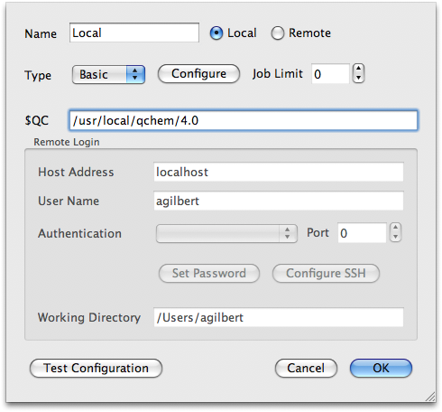
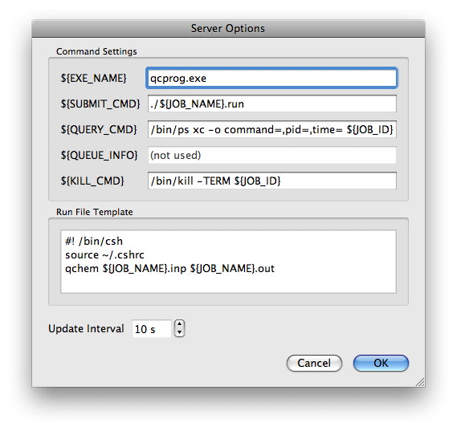
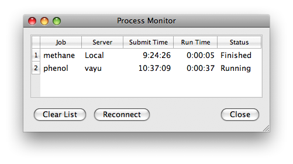

Running Q-Chem
IQmol can be configured to run Q-Chem calculations either on your local
machine or on a remote server. In order to do this Q-Chem must be correctly
installed on the computer that will be running the calculations. A Server
must also be configured as outlined below.
Server Configuration
- Select the Calculation→Edit Servers menu option to add a new
Server. A dialog will appear with a list of configured servers.
Initially this list will be empty.
- Click the Add New Server button with the '+' icon. This opens the
Server Dialog which allows the new server to be configured. The server is
the machine which has your copy of Q-Chem installed.

- Give the server a name (this is simply used to identify the current
server configuration and does not have to match the actual machine
name) and select if the machine is local (i.e. the same machine as
IQmol is running on) or remote. Presently, remote servers must be
Unix-based (i.e. not a Windows server).
- If there is PBS software running on the server, select the PBS
'Type' option, otherwise the Basic option should suffice.
- If required, the server can be further configured using the
Configure button. Details on this can be found in the
Server Options section below.
- For non-PBS servers the number of concurrent Q-Chem jobs can be
limited using a simple inbuilt queuing system. The maximum number of
jobs is set by the Job Limit control. If the Job Limit is set to
zero the queue is disabled and any number of jobs can be run
concurrently. Please note that this limit applies to the current
IQmol session and does not account for jobs submitted by other users
or by other IQmol sessions.
- The $QC environment variable should be entered in the given box.
- For remote servers the address of the machine and your user name are
also required. IQmol uses SSH to connect to remote machines and the
most convenient way to set this up is by using authorized keys (see
http://www.debian.org/devel/passwordlessssh for details on how
these can be set up). IQmol can then connect via the SSH Agent and
will not have to prompt you for your password. If you are not able
to use an SSH Agent, several other authentication methods are
offered:
- Public Key This requires you to enter your SSH passphrase
(if any) to unlock your private key file. The passphrase is
stored in memory, not disk, so you will need to re-enter
this each time IQmol is run.
- Password Vault This allows a single password (the vault key)
to be used to unlock the passwords for all the configured
servers. The server passwords are salted with 64 random bits
and encrypted using the AES algorithm before being stored on
disk. The vault key is not stored permanently and must be
re-entered each time IQmol is run.
- Password Prompt This requires each server password to be
entered each time IQmol is run. Once the connection has been
established the memory used to hold the password is
overwritten to reduce the risk of recovery from a core dump.
Further configuration of SSH options should not be required
unless your public/private keys are stored in a non-standard
location.
It is recommended that you test the server configuration to ensure
everything is working before attempting to submit a job. Multiple servers
can be configured if you have access to more than one machine with Q-Chem
installed, or if you have different account configurations. In this case the
default server is the first on the list and this can be changed by using the
arrow buttons in the Server List dialog.
Server Options
If IQmol does not work with the default set up you can customize the
behavior by clicking the Configure button in the Server Dialog. This opens
the Server Options window:

The Command Settings define several commands which are used in the
submission and control of Q-Chem processes. Changes to these may be
required if your system has non-standard paths to common utilities such as
the ps command, or if the ouput from the command is non-standard.
The Run File Template is the script that is used to run the Q-Chem job
and can be configured to include, for example, the hostname or start time in
the output file, or to copy scratch files to a permanent location. Valid
macros that appear in the template will be substituted with specified values
when submitting the job.
Macros are identified by the ${...} motif and are distinct from
environment variables (which do not include the braces). The following
variables can be used:
- ${JOB_ID}: This is set to the PBS job number for PBS servers and the
process ID otherwise.
- ${JOB_NAME}: This is the base name for the job and is what appears
as the molecule name in the Model View. By default this is used to
name the input and output files and for this reason it should not
include any spaces.
For PBS servers, the following additional variables are available. The
user is prompted for values for these variables when submitting a job to
a PBS server:
- ${QUEUE}: The name of the PBS queue to which the job is submitted.
- ${WALLTIME}: The wall time limit for job.
- ${MEMORY}: The virtual memeory limit for the job.
- ${JOBFS}: The file space limit for the job.
- ${NCPUS}: The number of CPUs to use. Note you will need a parallel version
of Q-Chem for this option to have any effect.
Submitting Calculations
Calculations can be set up via the Calculation→Q-Chem Setup menu option.
A dialog appears with the current molecule inserted into the input. Changes to the
various options can be made using the appropriate controls before selecting the
desired server and submitting the job. You will be prompted for a name for the
working directory and, if it is a PBS server, resource limits.
Please note that while Q-Chem is file-based, as of version 2.1 IQmol
uses a directory to organize the various files from a calculation.
The Process Monitor
Once the job has been succesfully submitted, you can monitor its progress
using the Process Monitor which can be opened via the Calculations→Job
Monitor menu option.

The Process Monitor displays a list of submitted jobs and their current
status which is updated every few seconds as determined by the Update
Interval in the Server Options dialog. Right-clicking on an item in the
monitor brings up a context menu which allows you to perform certain tasks
such as terminating the process or viewing the output from a finished
calculation.
When a job complete successfully, the output is automatically loaded
into IQmol. The presence of new output is indicated by a
 icon in the Model View.
icon in the Model View.